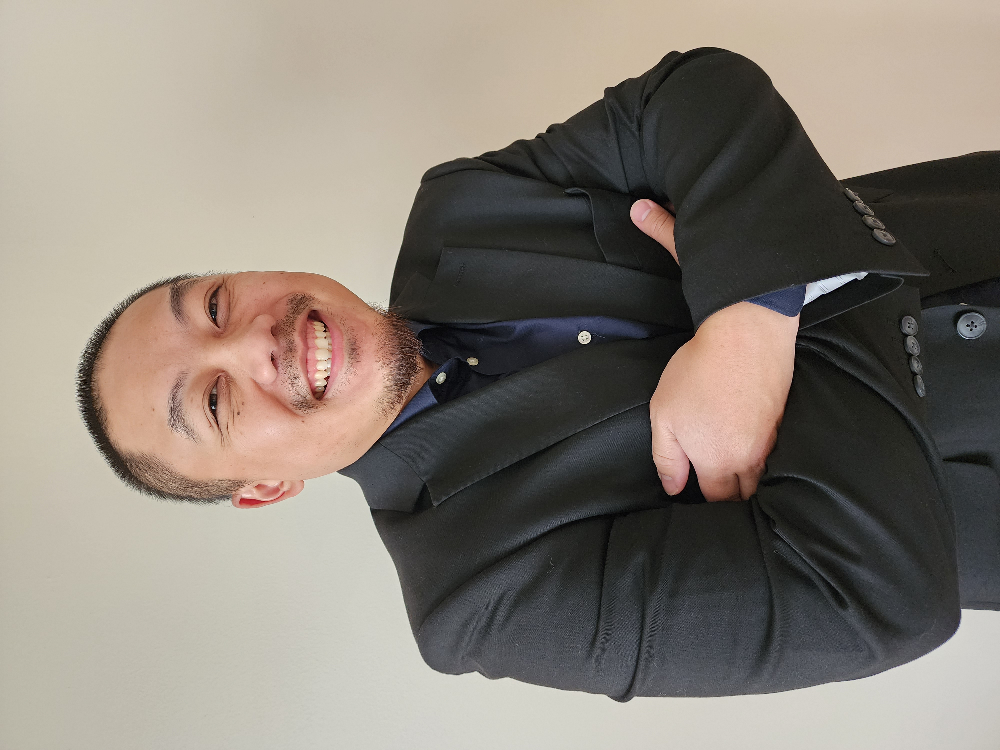

Christopher Thao
Location: West Bend, WI
Phone: (262)-506-0300
Email: Christophernewathao@yahoo.com
Summary of Qualifications
- Strong leadership skills; able to prioritize, delegate tasks, and make competent decisions to meet goals.
- Organized and results-oriented, with more than 5 years of experience in high-volume customer service.
- Skilled and thorough in analyzing problem situations and finding creative solutions to streamline processes; a fast, efficient worker.
Education
Moraine Park Technical College
West Bend, WI
August 2021-Present
Experience
Jeneil Biotech Corp. - April 2017-Present
Fermentation
- Pivotal role in the fermentation department, consistently ensuring critical components' seamless and efficient production. Implemented strict quality control measures and adherence to industry standards, contributing to the consistent quality of the products.
- Demonstrated strong problem-solving skills and the ability to adapt quickly to evolving production demands.
- Actively participated in ongoing training and skill development to stay updated with industry best practices, contributing to a culture of continuous improvement and innovation within the organization.
Polyfirst Packaging - October 2012-Present
Machine Operator/ Set Up/ Sporadic Team Lead
- Excelled as a dedicated machine operator and setup specialist, responsible for operating machinery and fine-tuning setups to maintain optimal production standards. Contributed to maintaining a highly efficient and productive work environment. Set up Operator.
- Served as a team lead, guiding and supervising colleagues to ensure efficient and safe operation of equipment. This leadership role involved training team members, maintaining quality control, and overseeing daily production tasks.
- Exceptional expertise as an extruding operator, ensuring precise production runs. Implemented rigorous quality checks to guarantee product integrity and compliance with industry standards.
Tao’s Hut - April 2010-April 2013
Manager/Chief
- Manager and chef at Tao’s Hut, I was responsible for the meticulous management of inventory and financial transactions. This included bookkeeping, ensuring accurate records, and financial transparency for the business.
- Maintained a strong focus on customer service, handling inquiries, resolving customer issues, and fostering a positive dining experience for patrons. Received accolades for consistently providing exceptional service.
- Leveraged culinary skills in the role, contributing to the restaurant's reputation for high-quality cuisine. Ensured that dishes were prepared to the highest standards, consistently delighting customers with delectable meals.
Skills
- Bilingual (English/Hmong)
- Microsoft Word, Excel, Outlook, PowerPoint, FileMaker, and Act! proficiency
- Ability to type 60 WPM
References
Available upon request